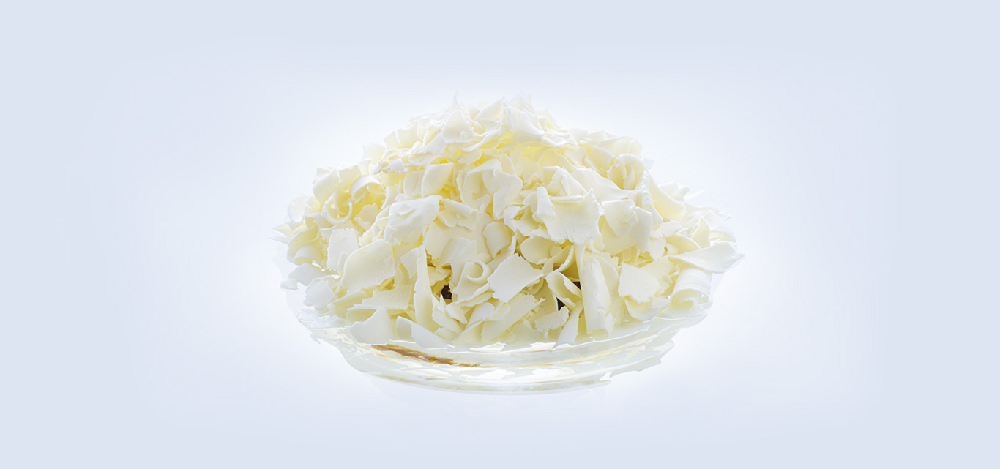
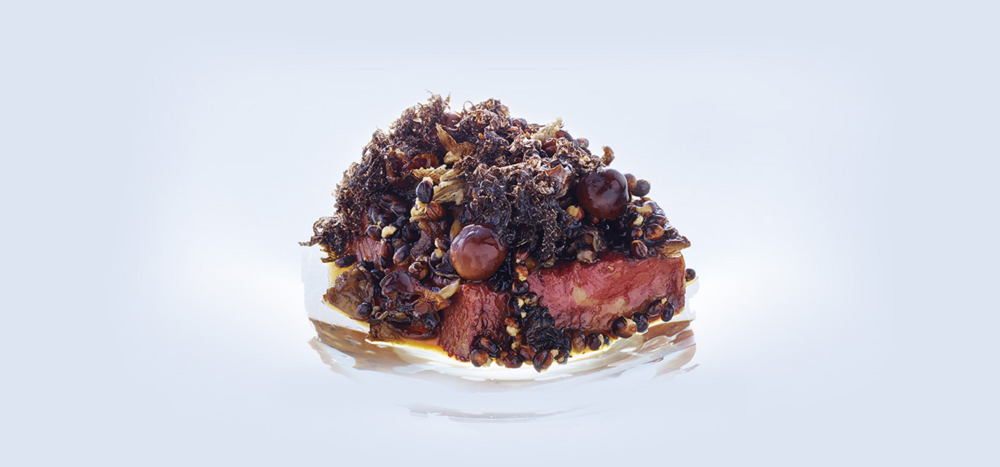

- 

- 


WELCOME
Our aim is to give you a rich experience. To explore some of Australia's most beautiful, natural produce.
To present an original cuisine where texture, purity of
flavour and balance is paramount. To bring warmth and
knowledge to our service in one of the world's most
extraordinary harbour settings.
EXPERIENCE
At Quay our aim is to provide a truly memorable dining experience. An experience that celebrates the diversity of our wonderful Australian ingredients cooked with imagination and passion. Warm, knowledgeable, professional staff will extend genuine hospitality as they guide you through your dining experience.
FUNCTIONS
Every event hosted by Quay not only enjoys our world-class cuisine, but is surrounded by the iconic maritime panorama of the world’s most stunning harbour city.
LATEST NEWS
PUBLIC HOLIDAY OPENING HOURS Oct. 29, 2015 Thursday 24th December: OPEN lunch and dinner Friday 25th December: OPEN lunch Saturday 26th December: CLOSED Sunday 27th December: OPEN dinner Monday 28th December: CLOSED Tuesday 29th December: CLOSED Wednesday 30th December: OPEN dinner Thursday 31st December: OPEN dinner Friday 1st January: CLOSED Saturday 2nd January: OPEN dinner Sunday 3rd January: OPEN dinner Monday 4th January: Resume trading as normal A 12.5% surcharge applies to all bookings made on a public holiday.